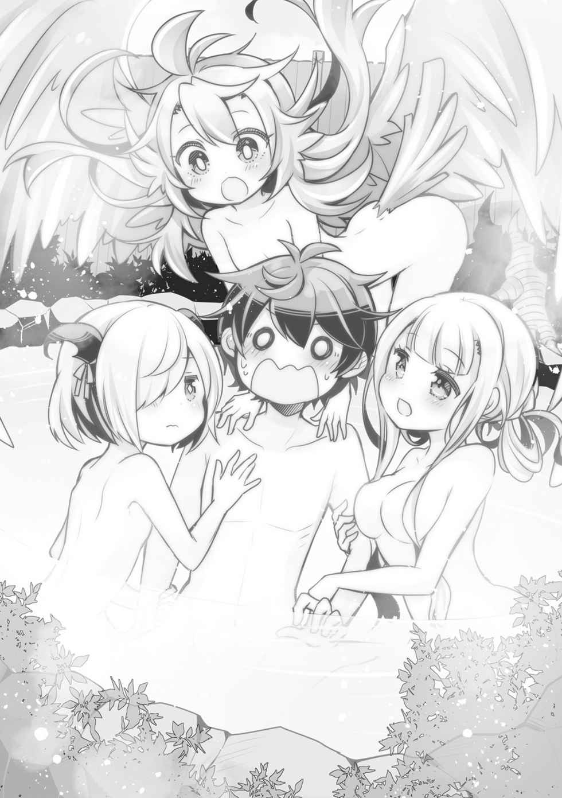
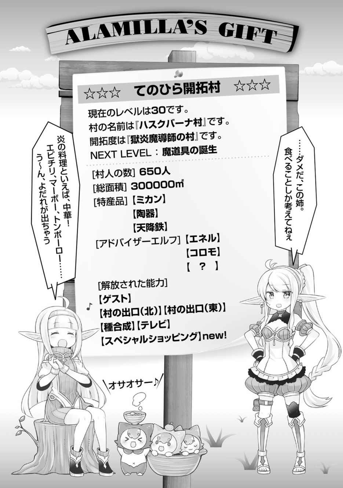

エピローグ
「ここだよ！ この真下が一番近いし量もたくさんありそうだよ！」
リーベルが指し示した場所は、奇しくもカエデがゴーレム君と一緒に作り上げた大浴場のすぐ隣。屋敷から歩いて五分程度の場所だった。
「本当にここか？」
「うん。他にもけっこう通ってるけど、屋敷から近いほうがいいんでしょ？」
「そりゃあね。じゃあ、さっそく掘ってみるか！」
リーベルたち翼人が村にやってきて一週間。
さすがに何世帯もの家族がいる翼人たちまで城で暮らしてもらうわけにもいかず、島民全員で彼らの屋敷を突貫で作り上げた。そして、少し余裕ができたころ俺はリーベルを呼び出し、彼女の能力である探し物の神ミスラの力で、『一番近くにある水脈』の位置を探してもらったのだった。途中で諦めていた井戸作りを本格的に再開するためである。
井戸を作るには地面を深く掘り進める必要がある。水が出るか定かでない状態で作業をするのは、まだ開拓半ばのこの島ではリソースの無駄遣いだったのだ。
だが、確実に出るとわかっているのならば話は別だ。
「あと、他にも頼んでおいたやつはどうだった？」
「うん。粘土と石炭と鉄ね。全部この島にあるみたい！ でも、鉄はなんか変なんだよ、島の向こうのほうにたくさん集まってるみたいで」
「量があるってことか？ それなら単純に嬉しい情報だよ。とにかく助かる。すごい力だ」
「アハッ、ありがと。神殿とはアレになっちゃったけど、神様には感謝しなきゃね。カイたちと出会ってなかったら、今頃みんなどうなってたかわからなかったし！」
朗らかにリーベルは笑う。確かに偶然とはいえ俺があのタイミングで通りかからなかったら、翼人たちの運命がどう転んでいたかわからない。
瘦せていたリーベルも翼人の男性たちも、栄養のあるものが食べられるようになったからか、この一週間足らずで見違えるように血色が良くなってきている。
逆に、血色が良すぎるぐらいだった捕らえられていた女性たちは、翼人目線では「太らされた」ということで、現在猛ダイエット中だ。あれだけ余計な脂肪が付くと、飛ぶことができなくなるらしく、それは種族のアイデンティティに関わる大問題らしい。
だがまあ、彼女たちも、すぐに飛べるようになるだろう。この島に彼女たちを無理に太らせようとする者はいないのだから。
「じゃあ、カイ。私、パトロール行ってきます！」
「ああ、鳥型のモンスター出るかもしれないから気を付けろよ」
「はーい」
青い翼を大きく広げ、フワリと空に舞い上がるリーベル。彼女には、捜し物の神の能力を最大限に発揮できるパトロール係としての仕事を頼んだ。
ここでの生活で一番の脅威は外から来る人間だ。だから、それが近づいてきたときに、リーベルに真っ先に発見してもらう。こちらはこの島に隠れ住んでいるのだから、煮炊きの煙一つでも見つかるわけにはいかない。
太陽の光を一杯に浴びて大空をゆっくりと飛ぶリーベルをしばらく眺めてから、俺は自分の仕事に取り組み始めた。
戦士君たちとゴーレム君たちに指示を出し、リーベルが教えてくれた水源があるという場所を掘る。戦士君たちが土を運び出し、力持ちのゴーレム君がひたすら掘ることで、効率良く作業が進む。どれほど掘れば水が出るかはわからないが、このペースならそうは掛かるまい。
井戸掘り作業の監督の次は、開拓村に移動して製鉄にチャレンジだ。
鉄の原料は手に入ったが、要である製鉄に関する知識は中途半端なものしかない。
鉄を溶かす為の炉をレンガで制作し、とにかく鉄を溶かすところからの出発だ。火力そのものは、レンの魔法だけでなんとかなる。だが、鉄製の道具を作るとなるとまだしばらく時間が掛かるだろう。
それが終わったら開拓村から出て、島を巡回し、これからの開拓計画を考える。
何が足りていて、何が足りないのか。優先順位は何か。村人たちに不満はないか。
考えること、やらなきゃならないこと。仕事はいくらでもある。だが──
──帝国がラベルダに攻め込む。
島のことを第一に考えようと思いながらも、その情報が俺の心を確実にむしばんでいた。
ラベルダには家族がいる。
親父も妹も祝福者であり、兵士ではない。戦争に巻き込まれる可能性は低いだろう。神殿は国を超えた組織であり、ラベルダが兵力として俺の家族を徴用することもありえない。しかし、だからといって心配せずにいられるだろうか。
そうでなくても、自分の故郷が戦場になるなんて。俺はあの場所で十二歳まで暮らしていたのだ。知り合いだって多い。
──できれば助けに行きたい。
だが、今の俺にはラベルダ王国の場所すらわからない。調べる為には、また別の街へ行かなければ。それには、どうしたって時間が掛かる。
翼人たちが来て、島の人口は五十名になった。
ユーリに言われてその気になったわけでもないが、俺は王だ。国を作ると宣言した以上、自分に向いてるとか向いてないとか言っている場合でもない。
だから、全員に対して責任がある。私情を優先していい状況ではないのだろう。
そんな、日々が続いた春のある日。
「お兄ちゃん。何も訊かず、ちょっと来てください」
俺が島の探索から帰ってくると、腰に手を当てたポーズでカエデがそう宣言し、強引にゴーレム君に担ぎ上げられてしまった。そのままカエデが先導しズンズンと歩いて行く。
「ちょ、ちょっと！ カエデどこ行くんだよ。自分で歩けるって！」
「お兄ちゃんは黙ってて！」
カエデの謎の剣幕に言い返すこともできず、結局運ばれるがままされてしまった。
運ばれた先は、カエデが作っていた大浴場だ。いつのまにか浴場のまわりが垣根で覆われ、丸見えではなくなっている。
井戸からはもう水が出て普通に使えるようにはなっているが、まだ一度も湯を張ったことはなかったのだが、まさか──
「では、服を脱いでもらいまーす！ あ、開拓村に逃げるのはナシだよ」
「ちょ、マジかよ。やっ、やめてっ！」
「ヴィー！」
つい女みたいな悲鳴を上げてしまう。想像以上に手先の器用なゴーレム君三体が俺の服を強引に脱がしていき、ついにはすっぽんぽんにされてしまった。
「はい、どうぞー！」
カエデがゴーレムに指示を出し、大浴場入り口のノレンをくぐると、そこには石で出来た無骨な露天風呂が──
「……はだいろッ！」
俺は思わず絶句してしまった。いや、絶句せずにいられるだろうか。こんなことに耐性があるわけないのだから。
大浴場には、大勢の先客がいた。いや、もともと何人も一度に入れるお風呂というコンセプトなのだから、おかしなことはない。
だが、こういう状況は想定していなかった。
アビス、レン、サラ、ユーリ、リーベル。それ以外にも元近衛隊員や翼人たち。
女性ばかり十名以上が入っている。もちろん、お風呂なのだから、全員裸だ。水着なんていう洒落た物は存在しない。
「じゃ、ゴーレム君、放り込んじゃって！」
「ヴィ！」
「えっ！ 噓だろ！」
ゴーレム君がカエデの命令に従い、ゴミでも捨てるかのようにポイッと俺を風呂に放り捨てる。一瞬の浮遊感の後、ザブンと適度に温かいお湯が体を包み込み、肌を刺すような感覚が訪れる。ありえない状況なのに、それでも何年ぶりかの風呂に体が反応してしまう。
「プハッ」
湯面から顔を上げると、一糸まとわぬ姿のみんなのド真ん中だ。
みんな、少し照れくさそうな顔をして、でも笑って歓迎してくれた。
「カイ、ようこそー、さあいっぱいみんなで温まって羽休めしよ！」
「一杯癒やしてさしあげますからね。さすがに裸同士というのは恥ずかしいですけど……いえ、お風呂ですから普通ですわよね。レンさんがそう言ってましたし」
「わたくしちゃんは、エネル姐さんから聞いたんですけどねー。姐さんは、マイロードの分身みたいなものですから、アドバイスは的確中の的確！ のはず！ きっと、一生忘れられない冒険になるって言ってました！」
「……マスタは、あったかいのが好きだから、お風呂と私たちで温めたら、いつもの二倍嬉しい。レンの言う通り。うんうん」
「いやぁ、大浴場ってのは初めてだけど、いいものだねぇカイくん。私は、この島に来てから、たくさん楽しいことを見つけたよ」
「オッサオサー♪」
みんな笑顔で、お風呂を楽しんでいる。
前世でも、混浴では変に気にせず風呂を楽しむのが紳士の嗜みと聞いたような覚えもあるし、俺が気にしすぎているだけで、この世界でもお風呂ってこういうものなのかも。
いやいや、だとしても一体どうしてこんなことになったのか。お風呂が完成した記念セレモニーかなにかで、みんなで入ることになったのか？ それとも、レンがエネルになにかを聞いたとか言ってたから、あいつの入れ知恵なのか。
「湯加減はどう？ お兄ちゃん？」
「カエデ」
少し遅れて、カエデも風呂に入ってくる。
お風呂はかなり大きめで、十名以上いっしょに入っているが、まだ余裕がある。
「最高だよ。お風呂も良い出来だな」
意図がよくわからないので風呂を褒めておく。実際、良い風呂だ。
カエデの住んでいた街では浴場がたくさんあったそうで、ならばと風呂作りはカエデに任せていたのだが、想像以上に良いものを作ってくれた。
「ありがと！ ゴーレム君の力がなかったら無理だったけど、我ながら良い出来！」
「うんうん。カエデはこういう才能あるに違いないよ」
「そうかも！ ──って、そんなことはどうでもいいの！ 今日はお兄ちゃんが主役なんだから！」
俺が主役？
なんだろう、誕生日でもないし……建国記念日なんて制定すらしてないし……。
俺が首を傾げると、なんだか全員がこっちを見ているような気がする。
特にユーリなどは、うずうずと今にも飛び掛かってきそうな野性味を感じる。
「帰ってきてからお兄ちゃん元気なかったでしょ？ だから、どうしたら元気出るか、みんなで考えたの。どうかな、元気出た？」
「そうだったのか……嬉しいけど、俺、そんな元気なかったか？」
「元気なかったよ！ 時々、遠くなんか見つめて溜息なんかついて、そのくせ相談はしてくれないし、ずっとなにかおかしかったもん！」
マジか。……いや、審問官に会ってしまったことや、帝国とラベルダが戦争になるらしいという情報で、心乱されていたのは確かだ。元気がない……という風にも見えたかも。
「悪い。みんなには、心配掛けたな。でも、こうしてみんなでお風呂に入って、ノンビリしてると、なんだか元気出てくるよ」
なぜエネルが、みんなで風呂に入れば俺が元気になると説明したのか謎だが、まあ確かに悪くない。さすがに目のやり場には困ってしまうけれど、心を無にして風呂や景色に集中すれば……。
「マイロード！ エネル姐さんに伝授された『カイを元気にする方法』はこれからですよ！ さあ、みなさん始めちゃいましょう！」
レンが謎の号令を出すと、いっしょに風呂に入っている女性陣の目が光った。
「な……なにを……？」
「カイ様～♡ 一番のりは、このわ・た・し！ ですわ♡」
すぐ近くにいたユーリが、お湯を搔き分けて俺に身体を寄せて、一瞬躊躇した後、腕にギュッと抱きついてきた。柔らかい感触がダイレクトに脳に伝わり、固まってしまう。
「おっ、おい──」
「……ユーリはいつもズルい。マスタは私のマスタなのに」
反対側の腕にくっついてくるアビス。
さらにリーベルも後ろから元気に抱きついてきた。
「カイはこういうのが好きなの？ それだったら、私、毎日やってあげるよ！」
そりゃ嫌いではないけど、誤解を生みそうな話だよ！ 確かに王様っぽいけど！
「さあ、みんなも続いてください！ ほら、サラさんも！ マイロードの上に乗っちゃっていいですから！ ほらほら！」
「うっ、さすがにそれは……しかし、他に空いてないし、仕方ないのかな。よし……」
よし、じゃないよ！
確かに嬉しくないといえば噓になるけど、心の準備なしに、いきなりこれはレベルが高すぎる状況！ 精神年齢は高いけど、リアル経験値は全然低いんだから！

「カイ様～。気持ちいいですわね？ 元気になってきました？」
ユーリがわかってるんだかわかってないんだか、腕に胸を押しつけながら囁く。
「じゃあ、失礼するよカイくん。はっはは……真正面から見られると、少し恥ずかしいな……私は君よりも年上だが、そういう経験があるわけじゃないんだ」
サラがそう言って、顔どころか身体まで真っ赤に染めながら、俺の肩に手を置き、しずしずと俺の太もものあたりに座った。
「ああ……胸がドキドキする……。ただお風呂に入っているだけなのに……」
「い、いえ、この状況は『ただお風呂に入っている』という状況ではないかと……」
俺だって未だかつてないほどドキドキしている。審問官に捕まって船に乗せられた時以上かもしれない。
さらに、他の女性たちも俺を取り囲んで、キャーキャーと黄色い声を上げながら、グイグイと体を押しつけてくる。
「ね、わかりましたでしょう？」
「なにがだよ！ 全然わからないんですけど!?」
「みんなが、カイ様のことが……好きだってことがですよ」
もみくちゃにされる俺の横で、ユーリが諭すように言う。
「カイ様は十分に慕われている王だってことです。最近、あなたがなにかに悩んでいたのは、みんな気付いていました。でも……悩む必要なんてないのではないですか？ あなたの思うままにやればいいのですよ。それでも悩むなら、相談して下さいませ」
「そうだとも、カイ君。私の首輪のことだって後回しでいいのだし、悩みがあるのだったら、いくらでも相談して欲しい。私はあまり物を知らないから、いい答えが出るかはわからないが、みんなだっているんだからな！」
「サラの言う通りです。どれほど優秀でも王一人では国は作れません。私たちを信頼して、相談するのも王の仕事のうちですわ」
相談か……。相談、そういえばしてなかったな。島の開拓のことじゃない。ラベルダのことは誰にも話していなかった。審問官のことも。
一人で抱え込んでたのか、俺。
「確かにユーリの言う通りだ。最近ずっと一人で悩んでた。自分個人の問題のような気がして、なんとなく言えずにいたよ。心配かけてゴメン。これからは、相談するようにする」
それに相談すれば、良いアイデアだって出るかもしれない。
レンがエネルから訊いてきた『元気を出す方法』は意味不明だったが、ユーリには感謝だ。一国の王女だったことは関係ないと思うが、よく見てくれている。
この島は、俺の能力頼りなところが大きい。だからこそ、俺はもっと積極的にみんなといろいろな事をわかちあうべきなのだろう。それが国を作るということなのかもしれない。
冴え渡る空を見上げる。今の季節は春。
次の冬までには余裕がある。時間的にも、資源的にも。
ラベルダの俺の家族も、帝国の古都にいるらしいカエデの家族のことも、サラの首輪のことも、なによりこの島での生活のことも。
すべてを上手く回すような方法が、きっとなにかあるはずだ。
